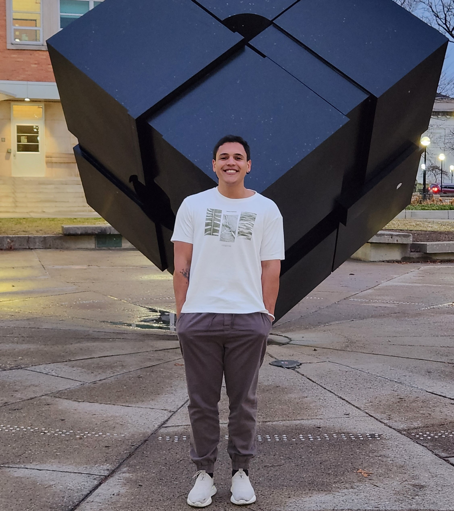

I use neural networks to understand the universe at its most violent: neutron star mergers, kilonovae, and gravitational-wave counterparts. My work bridges rigorous astrophysics with simulation-based inference and deep learning to extract meaning from transient signals at the speed of light.

Employing amortized Neural Posterior Estimation (ANPE) to rapidly infer kilonova physical parameters—ejecta mass, velocity, composition—from spectral energy distributions. Validated on AT 2017gfo, the only kilonova with confirmed multi-messenger data, matching MCMC methods while reducing inference time to seconds.
Developed CNN classifiers for artifact removal and transient identification integrated into the S-PLUS Transient Extension Program (STEP). A second network detects electromagnetic counterparts to gravitational-wave events, incorporated into the DESGW search and discovery pipeline.
Leading analysis of the LIGO/Virgo/KAGRA BBH merger candidate S231206cc, investigating potential electromagnetic emissions from merger remnant interactions with AGN accretion disks. Testing flare emission models by McKernan, Tagawa, and Rodríguez-Ramírez to probe detectability of EM counterparts.
During internship at LNCC, developed a BERTimbau-based algorithm classifying medical condition phrases in Portuguese. Built custom data pipelines using Google APIs and Regex to gather and filter YouTube comment data, bridging NLP and health informatics.
I am currently a Ph.D. candidate at CBPF, actively seeking postdoctoral opportunities in astrophysics, multi-messenger astronomy, or machine learning applied to physical sciences. I welcome opportunities to collaborate on challenging open problems at the intersection of AI and astrophysics.